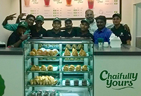

Chai Kings was registered and started by Bon Fresh Foods in Medavakkam in 2016. The first store was launched in Kilpauk, Chennai, in October 2016. Subsequently two other outlets opened within a fortnight’s
At times, your simplest needs happen to be sadly out of your reach. You’ve always wanted to have a refreshing cup of chai on the go, or while at work, or get it delivered when you need it most. But invariably, you end up making compromises. You resort to a not-so-hygienic tea shop on the road, or spend your valuable time painfully dipping those tea bags into your cup.